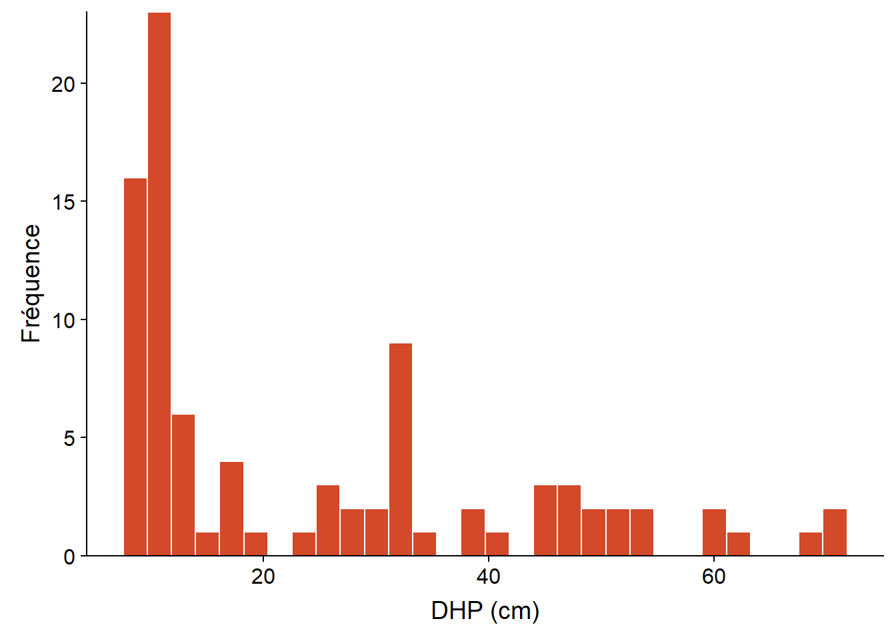
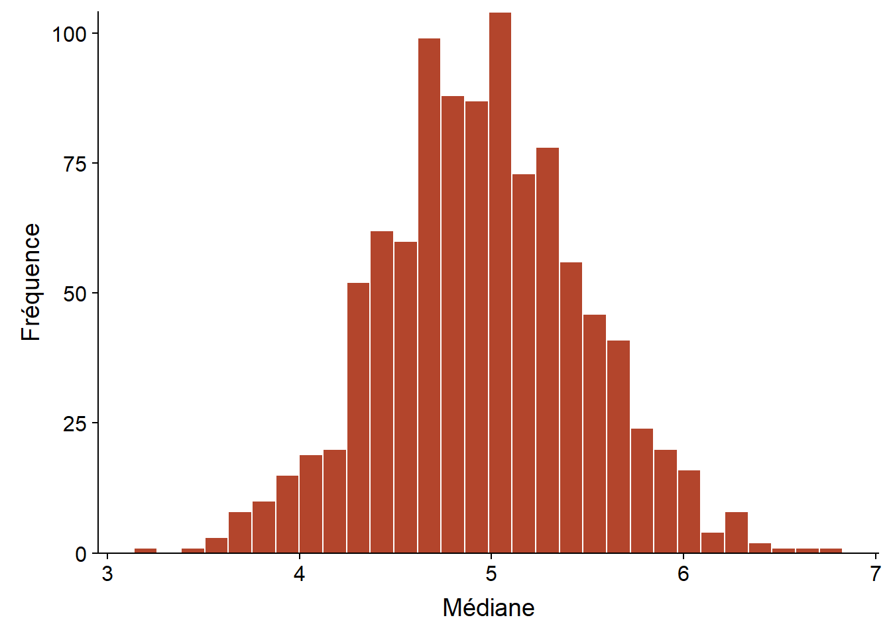
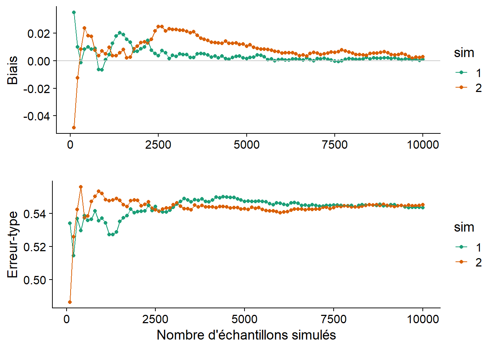
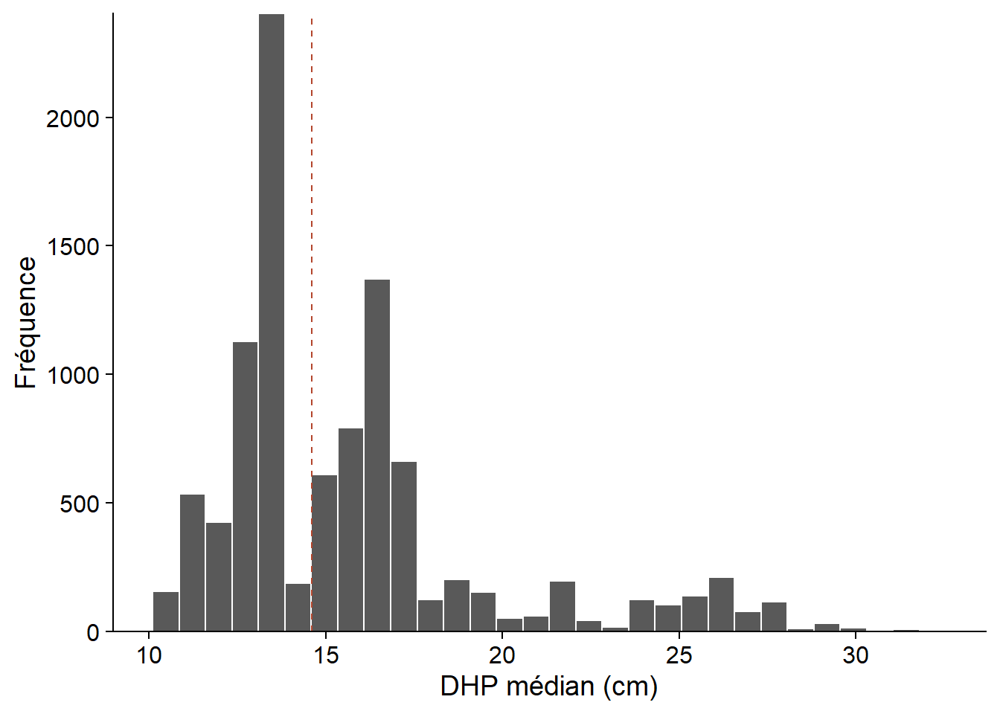

La méthode du bootstrap
Introduction
L’inférence statistique vise à obtenir des connaissances sur une population (un ensemble d’entités quelconques) à partir de variables mesurées sur un échantillon de cette population. Par exemple, supposons que nous voulons déterminer l’âge moyen des arbres d’une forêt (un paramètre de la population) à partir de la moyenne des âges de 30 individus choisis aléatoirement (une statistique). Pour certaines statistiques, la théorie nous permet d’obtenir directement un estimé avec sa marge d’erreur: par exemple, on sait que la moyenne d’un échantillon suit une distribution approximativement normale centrée sur la moyenne de la population.
Toutefois, il est fréquent que l’on s’intéresse à des statistiques dont la distribution est inconnue. Pour ce type de problème, les méthodes de ré-échantillonnage sont des stratégies polyvalentes pour assigner une erreur-type et un intervalle de confiance à un estimé. Ces méthodes se basent sur la distribution des données observées, avec un minimum de suppositions additionnelles. Dans ce cours, nous verrons plus spécifiquement la méthode du bootstrap.
Contenu du cours
Révision des concepts liés à l’estimation de paramètres: biais, erreur-type et intervalle de confiance.
Les méthodes de Monte-Carlo: estimer les propriétés d’une distribution en simulant des échantillons de celle-ci.
Le principe du bootstrap: ré-échantilloner un échantillon.
Calcul du biais, de la variance et des intervalles de confiance à partir du bootstrap.
Application du bootstrap aux paramètres d’une régression.
Estimation de paramètres
L’histogramme ci-dessous représente les diamètres à hauteur de poitrine (DHP) de 90 pruches du Canada inventoriées dans un site du Parc national de Kejimkujik en Nouvelle-Écosse (source: données ouvertes de Parcs Canada). Seuls les arbres ayant un DHP \(\ge\) 10 cm étaient inventoriés.
# Charger les données
pruche <- read.csv("../donnees/pruche.csv", stringsAsFactors = FALSE)
# Choisir un seul site et tracer l'histogramme du DHP
pruche_bd <- filter(pruche, site == "BD")
ggplot(pruche_bd, aes(x = dhp)) +
labs(x = "DHP (cm)", y = "Fréquence") +
geom_histogram(col = "white", fill = "#d3492a") +
scale_y_continuous(expand = c(0, 0))
D’un point de vue statistique, le DHP d’un arbre choisi au hasard dans une population est une variable aléatoire; appelons cette variable \(x\).
La distribution de \(x\) est une fonction qui, pour n’importe quel intervalle de valeurs de \(x\) \((x_1 < x < x_2)\), donne la probabilité qu’une observation de \(x\) soit comprise dans cet intervalle.
Les caractéristiques d’une distribution de probabilité sont représentées par des paramètres tels que la moyenne \(\mu\), la variance \(\sigma^2\) et l’écart-type \(\sigma = \sqrt{\sigma^2}\). Ces paramètres ne sont pas directement observables.
En contrepartie, une statistique est une fonction calculée à partir des données observées. Un estimateur est une statistique servant à estimer la valeur d’un paramètre. Par exemple, la moyenne \(\bar{x}\) et la variance \(s^2\) d’un échantillon de \(n\) observations \((x_1, x_2, ..., x_n)\) sont des estimateurs pour les paramètres \(\mu\) et \(\sigma^2\):
\[\hat{\mu} = \bar{x} = \frac{1}{n} \sum_{i = 1}^{n} x_i\]
\[\hat{\sigma^2} = s^2 = \frac{1}{n - 1} \sum_{i = 1}^n \left( x_i - \bar{x} \right)^2 \]
De façon plus générale, si \(\theta\) représente un paramètre quelconque, son estimateur est noté \(\hat{\theta}\).
Propriétés des estimateurs
L’estimateur d’un paramètre est lui-même une variable aléatoire, avec une distribution définie par rapport à l’ensemble des échantillons possibles d’une population. En particulier, on peut définir sa moyenne \(\bar{\hat{\theta}}\) et sa variance \(\sigma^2_{\hat{\theta}}\).
Le biais d’un estimateur est la différence entre sa valeur moyenne et la valeur réelle du paramètre.
\[ B = \bar{\hat{\theta}} - \theta \]
Si le biais est de 0, l’estimateur est non biaisé. Par exemple, les estimateurs \(\bar{x}\) et \(s^2\) définis plus haut ne sont pas biaisés, mais l’estimateur de la variance avec \(n\) au dénominateur (plutôt que \(n - 1\)) a un biais négatif; en moyenne, il sous-estime la variance réelle de la population.
L’écart-type d’un estimateur porte le nom spécial d’erreur-type (standard error), afin de ne pas le confondre avec l’écart-type des mesures individuelles. Pour l’estimateur de la moyenne \(\bar{x}\), cette erreur-type est égale à:
\[ \sigma_{\bar{x}} = \frac{\sigma}{\sqrt{n}} \]
où \(\sigma\) est l’écart-type des mesures individuelles et \(n\) la taille de l’échantillon. On peut estimer cette erreur-type en remplaçant \(\sigma\) (généralement inconnu) par l’écart-type de l’échantillon \(s\).
Pour l’exemple du DHP d’un échantillon de 90 pruches vu plus haut, nous obtenons \(\bar{x} = 24.5\), \(s = 17.8\) et \(s_{\bar{x}} = 1.9\).
Intervalle de confiance
Dans le cas de l’estimation de la moyenne \(\mu\), le théorème de la limite centrale nous dit qu’avec un échantillon assez grand, la distribution de \(\bar{x}\) est très proche d’une distribution normale de moyenne \(\mu\) et d’écart-type \(\sigma_{\bar{x}}\), et cela même si les observations individuelles ne sont pas distribuées normalement (comme dans notre exemple). En connaissant cette distribution théorique, nous pouvons déterminer la probabilité que \(\bar{x}\) mesurée sur un échantillon soit à une certaine distance de \(\mu\).
Par exemple, supposons que \(\mu = 20\) et \(\sigma_ {\bar{x}} = 2\). Le graphique ci-dessous montre la distribution de probabilité de \(\bar{x}\). En retirant le 2.5% de valeurs extrêmes de chaque côté de cette distribution, on obtient un intervalle (en rouge) dans lequel se trouve \(\bar{x}\) pour 95% des échantillons possibles.

Pour une distribution normale, on sait que cet intervalle de 95% a une largeur de 1.96 erreurs-types de part et d’autre de \(\mu\).
\[ \left(- 1.96 \frac{\sigma}{\sqrt{n}} \le \bar{x} - \mu \le 1.96 \frac{\sigma}{\sqrt{n}} \right)\]
Donc, si notre supposition que \(\bar{x}\) suit une distribution normale est correcte, nous savons que pour 95% des échantillons, l’estimateur \(\bar{x}\) se trouve au plus à 1.96 erreurs-types de \(\mu\). Ceci équivaut à dire que si nous définissons un intervalle de 1.96 erreurs-types autour de la moyenne estimée \(\bar{x}\), alors dans 95% des cas, cet intervalle contiendra la valeur du paramètre \(\mu\).
\[ \left(\bar{x} - 1.96 \frac{\sigma}{\sqrt{n}}, \bar{x} + 1.96 \frac{\sigma}{\sqrt{n}} \right)\]
Cet intervalle est nommé intervalle de confiance à 95% pour \(\mu\).
Note: En pratique, nous ne connaissons pas \(\sigma\), donc il faut remplacer cette valeur par son estimé \(s\), puis remplacer les quantiles de la distribution normale (\(\pm 1.96\)) par ceux de la distribution \(t\) avec \(n-1\) degrés de liberté.
Interprétation de l’intervalle de confiance
La méthode utilisée pour produire un intervalle de confiance à 95% signifie que, si le modèle statistique présumé est bon, l’affirmation que \(\mu\) se trouve dans l’intervalle de confiance sera correcte dans 95% des cas; pour 5% des échantillons possibles, nous aurons la malchance d’obtenir un \(\bar{x}\) plus éloigné de \(\mu\).
L’affirmation que “la moyenne a 95% de chances de se situer dans l’intervalle de confiance” n’est pas strictement exacte et peut porter à confusion, puisqu’elle laisse entendre que \(\mu\) est une variable aléatoire, ce qui n’est pas le cas dans la théorie présentée ici. Le niveau de confiance (95%) est une propriété de l’estimateur et du plan d’échantillonnage, pas du paramètre estimé. L’intervalle de confiance obtenu avec un échantillon spécifique contient ou ne contient pas \(\mu\).
Méthodes de Monte-Carlo
Les méthodes de Monte-Carlo (ou simulations de Monte-Carlo) tirent leur nom du célèbre lieu de jeux de hasard. Utilisées dans plusieurs domaines, il est difficile de leur donner une seule définition. Pour ce cours, nous considérerons qu’il s’agit d’une stratégie générale visant à estimer les propriétés d’une statistique en simulant des tirages aléatoires. Il s’agit en quelque sorte d’un “échantillonnage virtuel”.
La popularité de ces méthodes est due à la capacité des ordinateurs de générer rapidement une grande quantité de nombres aléatoires (en fait, pseudo-aléatoires, comme nous verrons plus tard). Ainsi, il est possible d’approximer des propriétés statistiques qui sont difficiles à calculer à partir des formules exactes. L’erreur due à l’approximation d’une distribution par un échantillon virtuel peut être réduite à volonté en augmentant le nombre de tirages simulés.
Par exemple, supposons que nous voulons calculer l’erreur-type de la médiane d’un échantillon de taille \(n = 20\), dans le cas où la variable suit une distribution normale de moyenne et d’écart-type connus. Dans le code R ci-dessous, la distribution de cette statistique peut être estimée en simulant 1000 échantillons.
# Nombre d'échantillons simulés
R <- 1000
# n observations
# moyenne m, écart-type s
med_norm <- function(n, m, s) {
ech <- rnorm(n, m, s)
median(ech)
}
med <- replicate(R, med_norm(20, 5, 2))
ggplot(NULL, aes(x = med)) +
labs(x = "Médiane", y = "Fréquence") +
geom_histogram(col = "white", fill = "#b3452c") +
scale_y_continuous(expand = c(0, 0))
La fonction replicate(R, expr) indique à R de répéter R fois l’évaluation de l’expression expr. Dans l’exemple, rnorm effectue un tirage de n observations d’une distribution normale avec paramètres m and s, puis median calcule la médiane de cet échantillon. Le résultat med est un vecteur de longueur R qui contient la valeur médiane de chacun des réplicats. Ce vecteur est une approximation de la distribution de la statistique qui nous intéresse (médiane de 20 observations d’une distribution normale). À partir de ces valeurs, nous pouvons ensuite estimer les propriétés de la statistique comme son biais ou son erreur-type.
Le graphique ci-dessous montre l’estimé du biais et de l’erreur-type de la même statistique (médiane de \(n = 20\) observations avec \(\mu = 5\) et \(\sigma = 2\)) pour deux simulations de Monte-Carlo différentes, en fonction du nombre d’échantillons simulés. Chaque simulation produit des valeurs différentes, mais le biais et l’erreur-type convergent en autant que le nombre de réplicats R soit suffisant. Les résultats ne sont jamais tout à fait exacts. Dans ce cas-ci, les deux simulations montrent un léger biais positif, même si on sait par des résultats théoriques que cette statistique n’est pas biaisée.

Ces graphiques de convergence aident à déterminer combien de réplicats sont suffisants pour que la méthode de Monte-Carlo donne une estimation suffisamment précise. Le nombre de réplicats nécessaires varie en fonction de la distribution des données et de la statistique à estimer.
Nombres pseudo-aléatoires
Un générateur de nombres pseudo-aléatoires (utilisé par des fonctions comme rnorm) est un algorithme produisant une séquence de valeurs qui, bien que déterminée parfaitement par sa valeur initiale, est très difficile à distinguer d’un tirage aléatoire. La valeur initiale fournie à l’algorithme est nommée graine (seed). Par défaut, cette valeur est choisie par R en fonction de l’horloge interne de l’ordinateur.
On peut aussi spécifier manuellement la graine au début d’un script avec la fonction set.seed(N), où N est un nombre entier arbitraire. Dans ce cas, la séquence de nombres générés sera la même pour chaque exécution du script, ce qui peut être utile si on veut reproduire exactement les résultats d’une analyse, ou déboguer un script incluant des tirages aléatoires.
rnorm(5)## [1] -0.01702545 0.03844598 0.53606785 0.18343607 -2.01285543set.seed(82)
rnorm(5)## [1] -1.2195343 0.3033129 -0.3304770 -1.4031843 0.2212113set.seed(82)
rnorm(5)## [1] -1.2195343 0.3033129 -0.3304770 -1.4031843 0.2212113Applications dans ce cours
Plusieurs des techniques présentées dans ce cours sont basées sur des simulations de type Monte-Carlo:
les techniques de ré-échantillonnage (comme le bootstrap);
les tests d’hypothèses basés sur la randomisation des données;
le calcul de l’incertitude des prédictions de modèles mixtes;
l’estimation des paramètres de modèles hiérarchiques bayésiens.
Le principe du bootstrap
Dans la section précédente, nous avons vu qu’il est possible d’approximer la distribution d’une statistique en simulant le processus d’échantillonnage. Cette méthode requiert toutefois de supposer que ce processus suit une certaine loi de probabilité.
Que faire si on ne peut pas supposer que les données originales sont tirées d’une distribution normale ou autre? Prenons l’exemple du début du cours, où on a mesuré le DHP de 90 arbres. Voici les statistiques sommaires de cet échantillon. Notez que même si, en principe, l’inventaire est limité aux arbres à DHP \(\ge\) 10 cm, l’échantillon inclut des arbres de diamètre un peu inférieur au seuil.
dhp <- pruche_bd$dhp
summary(dhp)## Min. 1st Qu. Median Mean 3rd Qu. Max.
## 8.80 10.10 14.60 24.47 32.83 71.00Comment définir une erreur-type ou un intervalle de confiance sur la médiane de l’échantillon (14.6 cm)?
Selon le principe du bootstrap, si on ne peut assigner une distribution a priori à une variable aléatoire, alors l’échantillon observé est notre meilleure approximation de la distribution de la variable dans la population. Cette méthode propose donc d’estimer les propriétés de statistiques en effectuant un ré-échantillonnage de l’échantillon observé.
Si l’échantillon original compte \(n\) observations, un échantillon bootstrap est obtenu en effectuant un tirage avec remise de \(n\) éléments de l’échantillon original. Puisqu’il s’agit d’un tirage avec remise, chaque observation originale peut avoir 0, 1 ou plusieurs copies dans l’échantillon bootstrap.
Par exemple, voici un échantillon original de 10 valeurs d’une variable:
## 10 23 37 43 49 57 61 79 88 92et trois échantillons bootstrap tirés à partir de celui-ci:
## 10 10 37 43 57 88 88 88 92 92
## 23 37 37 49 57 61 79 79 88 88
## 23 23 37 37 43 43 49 57 61 92Prenons un paramètre \(\theta\) et son estimateur \(\hat{\theta}\); \(\hat{\theta}_0\) dénote sa valeur pour l’échantillon observé. Dans notre exemple ci-dessus, \(\hat{\theta}_0\) est le DHP médian de l’échantillon et \(\theta\) est le DHP médian de la population (toutes les pruches ayant un DHP \(\ge\) 10 cm sur ce site).
La valeur de la statistique pour un échantillon bootstrap est notée \(\hat{\theta}^*\). D’après le principe du bootstrap, la distribution de \(\hat{\theta}^*\) par rapport à \(\hat{\theta}_0\) approxime la distribution de \(\hat{\theta}\) par rapport à \(\theta\).
En particulier, l’erreur-type de l’estimateur est donnée par l’écart-type de \(\hat{\theta}^*\), tandis que son biais correspond à \(\bar{\hat{\theta}^*} - \hat{\theta}_0\).
Bootstrap dans R
Le package boot inclus avec R simplifie l’application du bootstrap. La fonction boot de ce package calcule automatiquement une statistique donnée sur une série d’échantillons bootstrap des données originales.
library(boot)
med_boot <- function(x, i) median(x[i])
boot_res <- boot(dhp, med_boot, R = 10000)Le premier argument de boot indique les données à ré-échantillonner (le vecteur dhp) et le deuxième argument est une fonction décrivant la statistique à calculer. Il est important de spécifier cette fonction avec deux arguments: le premier recevra les données, le second recevra un vecteur d’indices obtenus par le ré-échantillonnage. La fonction boot génère un vecteur d’indices aléatoire pour chaque échantillon bootstrap, puis appelle la fonction spécifiée. Dans l’exemple, notre fonction calcule la médiane des éléments de \(x\) choisis par les indices \(i\).
Finalement, l’argument R de boot indique le nombre d’échantillons bootstrap à simuler.
Le résultat de la fonction, boot_res, contient plusieurs éléments. Le plus important est boot_res$t, qui donne les valeurs de la statistique pour chaque échantillon bootstrap, tandis que boot_res$t0 indique sa valeur pour l’échantillon original (correspondant à la ligne pointillée sur le graphique ci-dessous).
boot_hist <- ggplot(NULL, aes(x = boot_res$t)) +
labs(x = "DHP médian (cm)", y = "Fréquence") +
geom_histogram(col = "white") +
geom_vline(xintercept = boot_res$t0, linetype = "dashed", color = "#b3452c") +
scale_y_continuous(expand = c(0, 0))
boot_hist
À partir de la distribution obtenue, nous pouvons estimer le biais et l’erreur-type du DHP médian de l’échantillon.
# Biais
mean(boot_res$t) - boot_res$t0## [1] 1.105005# Erreur-type
sd(boot_res$t)## [1] 4.032191Points à considérer lors de l’application du bootstrap
Validité du bootstrap
Bien que le bootstrap ne requiert pas que les données suivent une distribution statistique précise, cela ne signifie pas que la méthode ne fait aucune supposition. En particulier, le ré-échantillonnage doit être représentatif de la façon dont l’échantillon original a été obtenu.
Pour la méthode de base présentée ici, on suppose que les observations ont été tirées indépendamment et aléatoirement parmi l’ensemble de la population (échantillonnage aléatoire simple).
Pour un échantillon stratifié, le bootstrap doit être stratifié de la même façon. L’argument strata de la fonction boot permet de spécifier la strate correspondant à chaque observation. Dans ce cas, le ré-échantillonnage se fait séparément dans chaque strate.
Sources d’erreur et nombre d’échantillons
La méthode du bootstrap implique deux sources d’erreur: une erreur statistique et une erreur numérique.
L’erreur statistique est liée à l’échantillonnage original, qui n’est jamais tout à fait représentatif de la population. Comme pour toutes les méthodes d’inférence statistique, cette erreur est moindre pour un échantillon de plus grande taille, bien que certains sources d’erreur peuvent induire un biais systématique.
L’erreur numérique est liée au ré-échantillonnage; comme dans les autres méthodes de type Monte-Carlo, cette erreur peut être réduite en augmentant le nombre d’échantillons simulés.
Il est recommandé de simuler au moins 1000 échantillons bootstrap, mais il est souvent facile d’en générer davantage, comme dans notre exemple. En général, il devrait être possible de réduire l’erreur numérique jusqu’à ce qu’elle soit négligeable par rapport à l’incertitude statistique. Cependant, le nombre d’échantillons bootstrap requis peut être très élevé dans des cas particuliers, comme lorsque la statistique est sensible à quelques valeurs extrêmes de l’échantillon.
Correction du biais
Selon le principe du bootstrap, la différence entre la moyenne des estimés bootstrap et l’estimé original (\(\bar{\hat{\theta}^*} - \hat{\theta}_0\)) approxime le biais de l’estimateur (\(\hat{\theta} - \theta\)).
Dans l’exemple ci-dessus, \(\bar{\hat{\theta}^*}\) = 15.7 cm et \(\hat{\theta}_0\) = 14.6 cm, pour un biais positif de 1.1 cm. Dans ce cas, un meilleur estimé du paramètre de la population pourrait être obtenu en soustrayant le biais de l’estimé original: 14.6 cm - 1.1 cm = 13.5 cm. Toutefois, la magnitude du biais peut varier selon la valeur du paramètre \(\theta\). Dans ce cas, la correction simple présentée ici peut produire des résultats erronés. Ce problème devient plus important pour des distributions très asymétriques.
Intervalles de confiance du bootstrap
La fonction boot.ci calcule différents types d’intervalles de confiance à partir des résultats du bootstrap. Si le niveau de confiance n’est pas spécifié, la fonction choisit 95% par défaut.
Voici les intervalles calculés pour notre exemple du DHP médian de 90 pruches. Les différences entre ces méthodes sont expliquées ci-dessous.
boot.ci(boot_res)## Warning in boot.ci(boot_res): bootstrap variances needed for studentized
## intervals## BOOTSTRAP CONFIDENCE INTERVAL CALCULATIONS
## Based on 10000 bootstrap replicates
##
## CALL :
## boot.ci(boot.out = boot_res)
##
## Intervals :
## Level Normal Basic
## 95% ( 5.59, 21.40 ) ( 2.50, 18.05 )
##
## Level Percentile BCa
## 95% (11.15, 26.70 ) (11.00, 26.55 )
## Calculations and Intervals on Original ScaleIntervalle normal
Cette méthode calcule l’intervalle à partir des quantiles de la distribution \(t\), comme si \(\hat{\theta}\) suivait une distribution normale. Par exemple, l’intervalle de confiance à 95% est donné par:
\[(\hat{\theta}_0 + t_{(n-1)0.025} s_{\hat{\theta}}, \hat{\theta_0} + t_{(n-1)0.975} s_{\hat{\theta}})\]
où \(s_{\hat{\theta}}\) est l’erreur-type estimée par le bootstrap, \(n\) est la taille de l’échantillon et \(t_{(n-1)q}\) est le quantile \(q\) de la distribution \(t\) avec \(n - 1\) degrés de liberté.
Puisque le bootstrap est souvent utilisé lorsqu’on ne peut pas présumer que la statistique suit une distribution normale, l’intervalle normal a une utilité limitée. Dans notre exemple, la limite inférieure (5.59 cm) n’est pas réaliste, se situant sous le DHP minimum d’échantillonnage.
Intervalle des quantiles
L’intervalle des quantiles (percentile) est estimé directement à partir des quantiles appropriés de la distribution du bootstrap. Par exemple, l’intervalle à 95% utilise les quantiles à 2.5% et 97.5% de la distribution de \(\hat{\theta}^*\):
\[ (\hat{\theta}^*_{0.025}, \hat{\theta}^*_{0.975}) \]
Intervalle de base
L’intervalle de base (basic) utilise les quantiles de la différence \(\hat{\theta}^* - \hat{\theta}_0\). Par exemple, un intervalle de à 95% pour cette différence est donné par
\[ (\hat{\theta}^*_{0.025} - \hat{\theta}_0 \le \hat{\theta}^* - \hat{\theta}_0 \le \hat{\theta}^*_{0.975} - \hat{\theta}_0) \]
En partant du principe que la distribution de \(\hat{\theta}^* - \hat{\theta}_0\) approxime la distribution de \(\hat{\theta} - \theta\), l’intervalle de confiance pour \(\theta\) est donné par:
\[ \left( (\hat{\theta}_0 - (\hat{\theta}^*_{0.975} - \hat{\theta}_0), \hat{\theta}_0 - (\hat{\theta}^*_{0.025} - \hat{\theta}_0) \right) \]
ou en simplifiant
\[ (2\hat{\theta}_0 - \hat{\theta}^*_{0.975}, 2\hat{\theta}_0 - \hat{\theta}^*_{0.025}) \]
Pourquoi les quantiles sont-ils inversés par rapport à ceux de la distribution du bootstrap? Il est plus facile d’expliquer cette méthode avec un exemple. Pour nos données de DHP, l’intervalle à 95% de \(\hat{\theta}^* - \hat{\theta}_0\) est de (11.15 - 14.6, 26.7 - 14.6) = (-3.45, 12.1). En transposant cette relation à la différence \(\hat{\theta} - \theta\), on dirait que \(\hat{\theta}\) peut sous-estimer \(\theta\) jusqu’à 3.45 cm ou le surestimer jusqu’à 12.1 cm. Autrement dit, l’intervalle pour \(\theta\) serait de (14.6 - 12.1, 14.6 + 3.45), ce qui correspond à l’intervalle de base obtenu dans R (2.50, 18.05).
L’intervalle de base et l’intervalle des quantiles diffèrent lorsque la distribution de \(\hat{\theta}^*\) est asymétrique ou biaisée, comme c’est le cas ici. L’intervalle de base, contrairement à l’intervalle des quantiles, effectue implicitement une correction du biais.
Si le principe semble raisonnable, l’intervalle de base n’est pas réaliste dans notre exemple, puisque la limite inférieure (2.5 cm) est bien en-deçà du seuil d’échantillonnage du DHP. Le calcul ne tient pas compte du fait que la distribution de \((\hat{\theta} - \theta)\) dépend de la valeur de \(\hat{\theta}\) lui-même, donc une simple transposition de l’intervalle n’est pas optimale.
Intervalle studentisé
L’intervalle studentisé (studentized) part du même principe que l’intervalle de base, mais la différence \(\hat{\theta}^* - \hat{\theta}_0\) est normalisée par l’écart-type de \(\hat{\theta}^*\):
\[ t^* = \frac{\hat{\theta}^* - \hat{\theta}}{s_{\hat{\theta}^*}} \]
Il s’agit de la même transformation utilisée pour calculer le \(t\) de Student à partir d’une variable normalement distribuée, d’où le nom de l’intervalle.
L’intervalle studentisé corrige une des lacunes de l’intervalle de base, en tenant compte du fait que l’erreur-type de \(\hat{\theta}\) n’est pas constante.
Cet intervalle n’est pas inclus dans notre exemple. R nous avertit que le calcul de l’intervalle studentisé requiert un estimé des variances de bootstrap (\(s_{\hat{\theta}^*}\)). Il faut estimer cette variance pour chaque valeur de \(\hat{\theta}^*\). Cela peut être fait en réalisant un deuxième bootstrap de chaque échantillon bootstrap, mais il existe des alternatives moins coûteuses du point de vue de calcul.
Intervalle avec correction du biais et de l’accélération (BCa)
Le dernier intervalle calculé par boot.ci est l’intervalle BCa (pour bias-corrected and accelerated). Cette intervalle est semblable à l’intervalle des quantiles, sauf qu’au lieu de choisir des quantiles fixes (ex. 2.5% et 97.5% pour un intervalle à 95%), la méthode BCa choisit différents quantiles en tenant compte du biais et de l’asymétrie de la distribution. Nous ne discuterons pas des détails de ce calcul dans ce cours. Pour notre exemple, l’intervalle BCa est très proche de l’intervalle des quantiles, avec un léger décalage vers le bas.
L’intervalle BCa et l’intervalle studentisé sont les deux méthodes les plus précises en théorie. Puisqu’il choisit ultimement des quantiles de la distribution de \(\hat{\theta}^*\) plutôt que d’une transformation de \(\hat{\theta}^*\), l’intervalle BCa ne va jamais dépasser l’étendue des données observées, ce qui peut être un avantage; dans notre exemple, les limites de l’intervalle demeureront des valeurs de DHP possibles pour cet inventaire.
L’intervalle BCa est le plus recommandé en pratique, mais requiert aussi plus d’échantillons bootstrap pour être estimé correctement. Il peut être numériquement instable dans certains cas, donc il est avisé de répéter le bootstrap et augmenter le nombre d’échantillons si nécessaire.
Application du bootstrap à une régression
Supposons que nous ajustons une régression linéaire à un jeu de données contenant une variable réponse \(y\) et des variables prédictrices \(x_1\) et \(x_2\).
| \(y\) | \(x_1\) | \(x_2\) |
|---|---|---|
| 21 | 0.5 | 15 |
| 27 | 0.6 | 10 |
| 39 | 1.7 | 12 |
| 30 | 0.8 | 17 |
| 37 | 0.9 | 13 |
| … | … | … |
Si les suppositions du modèle linéaire ne sont pas tout à fait respectées (ex.: résidus non normalement distribués, présence de valeurs extrêmes), les intervalles de confiance théoriques des coefficients, basés sur la distribution \(t\), seront inexacts et le plus souvent trop optimistes. Dans ce cas, le bootstrap nous permet d’obtenir des intervalles de confiance plus réalistes.
Pour appliquer le bootstrap à une régression, nous pouvons ré-échantillonner soit les observations, soit les résidus du modèle. Nous comparons ces deux stratégies ci-dessous.
Ré-échantillonner les observations
Si les rangées du jeu de données représentent des individus échantillonnés de façon aléatoire et indépendante à partir de la population, alors nous pouvons créer des échantillons bootstrap en réalisant un tirage avec remise de ces rangées. Voici par exemple les premières rangées d’un échantillon obtenu à partir du tableau précédent, où la 2e observation a été choisie à deux reprises tandis que la 4e observation est absente.
| \(y\) | \(x_1\) | \(x_2\) |
|---|---|---|
| 21 | 0.5 | 15 |
| 27 | 0.6 | 10 |
| 27 | 0.6 | 10 |
| 39 | 1.7 | 12 |
| 37 | 0.9 | 13 |
| … | … | … |
Il suffit ensuite d’estimer les coefficients du modèle pour chaque échantillon bootstrap.
Ré-échantillonner les résidus
Dans cette approche, nous ajustons d’abord le modèle de régression aux données, ce qui permet d’exprimer la réponse \(y\) comme la somme d’une réponse moyenne \(\hat{y}\) déterminée par les prédicteurs et d’un résidu aléatoire \(\hat{\epsilon}\):
\[y = \hat{\beta_0} + \hat{\beta_1} x_1 + \hat{\beta_2} x_2 + \hat{\epsilon} = \hat{y} + \hat{\epsilon}\]
| \(y\) | \(x_1\) | \(x_2\) | \(\hat{y}\) | \(\hat{\epsilon}\) |
|---|---|---|---|---|
| 21 | 0.5 | 15 | 25.3 | -4.3 |
| 27 | 0.6 | 10 | 26.2 | 0.8 |
| 39 | 1.7 | 12 | 41.0 | -2.0 |
| 30 | 0.8 | 17 | 29.9 | 0.1 |
| 37 | 0.9 | 13 | 31.3 | 5.7 |
| … | … | … | … | … |
Ensuite, nous effectuons un ré-échantillonnage des résidus \(\hat{\epsilon}\) seulement, puis nous ajoutons ces résidus aux \(\hat{y}\) pour obtenir l’échantillon bootstrap de \(y\).
| \(y\) | \(x_1\) | \(x_2\) | \(\hat{y}\) | \(\hat{\epsilon}\) |
|---|---|---|---|---|
| 23.2 | 0.5 | 15 | 25.3 | -2.1 |
| 22.9 | 0.6 | 10 | 26.2 | -3.3 |
| 45.1 | 1.7 | 12 | 41.0 | 4.1 |
| 33.3 | 0.8 | 17 | 29.9 | 3.4 |
| 33.2 | 0.9 | 13 | 31.3 | 1.9 |
| … | … | … | … | … |
Comme précédemment, le modèle est ajusté pour chaque échantillon bootstrap en fonction des nouvelles valeurs de la réponse et des prédicteurs (ces derniers restent identiques dans ce cas-ci).
Les intervalles de confiance basés sur cette méthode tendent à être moins larges que ceux basés sur un ré-échantillonnage des observations. Toutefois, la validité de cette approche requiert que certains critères soient respectés. Les valeurs des prédicteurs doivent être fixes (ce qui est souvent le cas pour un dispositif expérimental) et le modèle de régression doit bien représenter la relation entre les prédicteurs et la réponse. Les résidus n’ont pas besoin de suivre une distribution particulière (ex.: normale), mais ils doivent être indépendants et suivre la même distribution. En particulier, les résidus ne peuvent pas être ré-échantillonnés si leur variance n’est pas homogène.
Bootstrap paramétrique
La technique du bootstrap vue dans ce cours est dite non-paramétrique, car elle ne requiert pas un modèle statistique paramétré des observations.
Le bootstrap paramétrique est une méthode où les échantillons bootstrap ne sont pas obtenus par tirage à partir des données originales, mais simulés à partir du modèle paramétrique ajusté aux données. Cette méthode s’apparente donc davantage à la simulation de Monte-Carlo présentée plus tôt dans le cours. Elle s’applique lorsqu’on peut supposer que les données proviennent d’une distribution précise, mais qu’on ne connait pas la distribution de la statistique qui nous intéresse.
Résumé
Les méthodes de Monte-Carlo permettent d’approximer la distribution d’une statistique à partir de simulations.
Le bootstrap (non-paramétrique) est une technique de ré-échantillonage: on crée des échantillons virtuels à partir d’un tirage avec remise des valeurs de l’échantillon observé.
La distribution d’un estimateur pour ces échantillons virtuels, par rapport à sa valeur calculée pour l’échantillon original, sert à approximer la distribution de l’estimateur par rapport à la valeur du paramètre dans la population. À partir de cette distribution, nous pouvons déterminer le biais, la variance et l’intervalle de confiance de cet estimateur.
Le ré-échantillonnage doit être représentatif de la façon dont l’échantillon original a été obtenu.
Pour appliquer le bootstrap à l’estimation des paramètres d’une régression, le ré-échantillonnage des observations et le ré-échantillonnage des résidus sont deux méthodes acceptées; le choix d’une ou de l’autre dépend des suppositions qu’on peut faire dans un cas particulier.